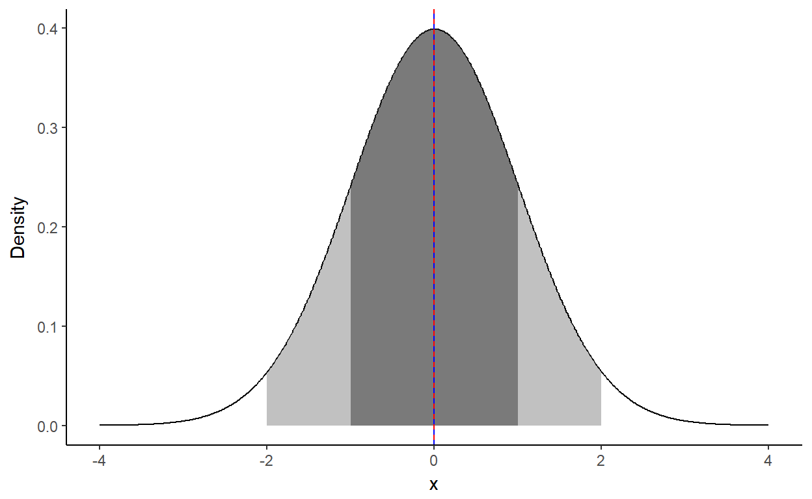

50 men and 50 women agreed to have their brain volume as well as their body weight measured. We put the resulting data into variable my.data in your R workspace. my.data is of type data frame (see Chapter 5 of course “Introduction to R”)
summary() on my.data to have a look at its structure.brain of my.data.aggregate() to calculate the mean for each gender.# summary(my.data)
#average brain
#aggregate over gender and calculate the brain volume
#aggregate over gender and calculate the standard deviation# summary(my.data)
summary(my.data)
#average brain
mean(my.data$brain)
#aggregate over gender and calculate the brain volume
aggregate(my.data$brain,list(my.data$gender),mean)
#aggregate over gender and calculate the standard deviation
aggregate(my.data$brain,list(my.data$gender),sd)We provide dataframe p.bar.data that contains the mean and its standard error (\(\frac{\sigma}{\sqrt{N}}\)) for the brain volume of each gender.
You may want to use str() or summary() on p.bar.data to have a look at its structure.
ggplot() for data mappingdata tells ggplot where your data is stored.aes tells ggplot which parts of your data to map to the x-axis and the y-axis, respectively. You plan to plot gender against the respective average brain volume.geom_bar() to do a simple bar blot. Use stat="identity" to make the heights of the bars represent values in the data mapped to the y-axis.geom_errorbar() to add error bars to the bar plot.# simple barplot assign this to variable p.bar
p.bar <- ggplot(aes(y=______,x=_____),data=p.bar.data)+
geom_bar(stat="______")
# add error bars to p.bar
p.bar <- ggplot(aes(y=_____,x=_____),data=p.bar.data)+
geom_bar(stat="_____")+
geom_errorbar(aes(ymin=______,ymax=_____),width=0.3)
# plot p.bar
plot(p.bar)# simple barplot assign this to variable p.bar
p.bar <- ggplot(aes(y=mean_brain,x=gender),data=p.bar.data)+
geom_bar(stat="identity")
#add error bars to p.bar
p.bar <- ggplot(aes(y=mean_brain,x=gender),data=p.bar.data)+
geom_bar(stat="identity")+
geom_errorbar(aes(ymin=ymin,ymax=ymax),width=0.3)
# plot p.bar
plot(p.bar)We already introduced central tendency measures of a distribution (mean (\(\mu\)) and median) and spread (dispersion) of a distribution (variance (\(\sigma^2\)) and standard deviation (\(\sigma\))).
A normal distribution is symmetrical, i.e. \(mean = median\). Whenever a distribution is not symmetrical: \(mean\neq median\).
You can find additional, more in depth material about mean, variance, and skew of a distribution at Moments of Distributions and Normal Distributions, Standard Deviations, Modality, Skewness and Kurtosis: Understanding concepts.
The variable p.norm provided in your workspace contains data for a probability density function (PDF) in its data field.
Plotting p.norm results in a graph where the red line represents \(\mu\) and the blue dashed line represents the median, respectively.
The dark gray area represents \(\mu\pm1\sigma\) and covers ~67% of the area under the curve, the light gray area represents \(\mu\pm2\sigma\) and covers ~95% of the area under the curve.

p.norm$data holds values corresponding to a PDF of a normal distribution with \(\mu=0, \sigma=2\) in its y2 field. Add a layer to the previous plot by adding a geom_line that uses y2 as y-aesthetic. That geom_line produces a graph in green.
#add a layer for a PDF with sigma=2
p.norm<-p.norm+geom_line(aes(y=_____),col="green")
p.norm#add a layer for a PDF with sigma=2
p.norm<-p.norm+geom_line(aes(y=y2),col="green")
p.normThe variable p.skew provided in your workspace contains data for a skewed distribution.
p.skew to look at the resulting graph. Do you see the difference to a plot of a normal distribution?#plot skewed distribution
p.skewAs seen in the previous exercise, some distributions may be skewed. This may also be true for data you collected. Therefore, it is a good idea to visualize your data by using plots that include spread (dispersion) and skew. One example in R is the function boxplot().
A boxplot displays more information than a barplot: - A box describes the inter quartile range (IQR) of a distribution. 50% of the data points lie within the box. The bottom of the box lies at 25% (first quartile), the top at 75% (third quartile) of the data.
The line in the center of the box represents the median, i.e. 50% of the data points lie above this value and 50% lie below this value. If this line is shifted off center, the data is skewed, i.e \(mean\neq median\).
The whiskers (small lines protruding from the box) have an intervall of 1.5*IQR on each side of the box.
Data points outside the whiskers’ range are called outliers.
See Box Plot: Display of Distribution for further details on the layout of boxplots.
Here we will use the ggplot2 library to plot a boxplot. This library is built on the grammar of graphics by Leland Wilkinson. The library offers excellent plotting capabilities that allow for a wide range of customisation. In the code on the right the function aes(), describes how data are mapped to visual properties (aesthetics) of geometric objects (geoms). In this case a geom_boxplot to depict a boxplot.
Execute the code on the right to view a boxplot. Outliers are depicted by dots. Have a look at the plot.
p.box<-ggplot(aes(y=brain,x=gender),data=my.data)+
geom_boxplot()
plot(p.box)Overlaying a boxplot with the individual data points potentially yields additional insights into the data structure.
Here, we will add a scatterplot to our previous plot. Using geom_jitter() jitters (randomly displaces) data points along the x-axis without changing their y-value, thus making it possible to view all data points without interference.
Remember your variable my.data? - Fill in the gaps in the code provided to create a boxplot of brain volume versus gender. - Use geom_jitter() to add the individual data points.
Outliers are depicted by dots.
p.box<-ggplot(aes(y=_____,x=_____),data=_____)+
geom_boxplot()+
geom_jitter(width=.1,col="red")
plot(p.box)p.box<-ggplot(aes(y=brain,x=gender),data=my.data)+
geom_boxplot()+
geom_jitter(width=.1,col="red")
plot(p.box)As mentioned earlier customisation is a strong feature of the ggplot2 library. Customisation may be used to make plots publication ready.
For convenience, plot commands can be assigned to a variable (in our case p.box). Operator + may be used for overlays as well as for adding plot options. This may enhance your code’s readability as well as its reproducibility.
To actually see the plot use plot() or just type in the name or the variable and execute.
Let’s add some colour to the plot.
#boxplot
p.box<-
ggplot(aes(y=brain,x=gender,fill=gender),data=my.data) +
geom_boxplot()
plot(p.box)
# change the two colours
p.box<- p.box+
scale_fill_manual(values=c("_____","_____"))
plot(p.box)#boxplot
p.box<-
ggplot(aes(y=brain,x=gender,fill=gender),data=my.data) +
geom_boxplot()
plot(p.box)
# change the two colours
p.box<- p.box+
scale_fill_manual(values=c("pink","light blue"))
plot(p.box)Now we will customise a plot to remove some clutter.
Themes define non-data components of a plot (background color, panel background color and grid lines). Library ggplot2 provides several pre-defined themes. See [ggtheme()] (https://www.rdocumentation.org/packages/ggplot2/versions/2.2.1/topics/ggtheme) for more information.
Position and layout of plot legends can be manipulated by adjusting parameters legend.foo in function [theme()] (https://www.rdocumentation.org/packages/ggplot2/versions/2.2.1/topics/theme).
theme_classic() and theme_minimal().none, left, right, bottom, top. Remove the legend!p.box<-
ggplot(aes(y=brain,x=gender,fill=gender),data=my.data) +
geom_boxplot()+
scale_fill_manual(values=c("pink","light blue"))
plot(p.box)
# add a theme
p.box<- p.box+
theme_c_____()
plot(p.box)
# remove the legend
p.box<- p.box+
theme(legend._____ = '_____')
plot(p.box)#boxplot as created previously
p.box<-
ggplot(aes(y=brain,x=gender,fill=gender),data=my.data) +
geom_boxplot()+
scale_fill_manual(values=c("pink","light blue"))
plot(p.box)
# add a theme
p.box<- p.box+
theme_classic()
plot(p.box)
# remove the legend
p.box<- p.box+
theme(legend.position = 'none')
plot(p.box)So far, we plotted a continuous variable (brain volume) against a factorial variable (gender).
Now, we will investigate the relationship between two continuous variables of our data: brain volume and head size,
Function [geom_point()] (https://www.rdocumentation.org/packages/ggplot2/versions/2.2.1/topics/geom_point) creates a layer with a dot for each continuous variable pair.
aes) statement.#relationship between brain volume and body weight
ggplot(aes(y=_____,x=____),data=my.data)+
geom_point()
#add colours for female and male data
#and add meaningfull axis labels
ggplot(aes(y=____,x=____,col=____),data=my.data)+
geom_point()+
xlab('body weight [kg]')+ylab('brain volume [cmm]')#relationship between brain volume and body weight
ggplot(aes(y=brain,x=head),data=my.data)+
geom_point()
#add colours for female and male data
#and add meaningfull axis labels
ggplot(aes(y=brain,x=head,col=gender),data=my.data)+
geom_point()+
xlab('body weight [kg]')+ylab('brain volume [cmm]')